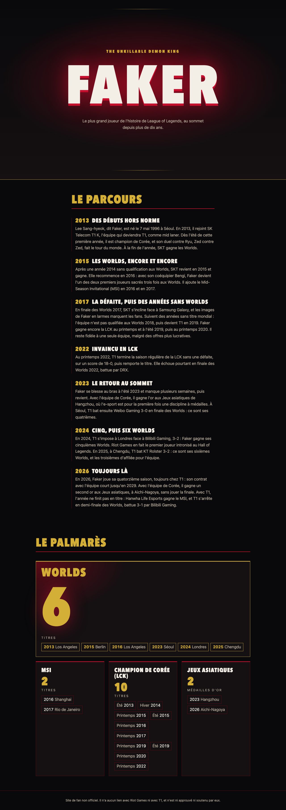
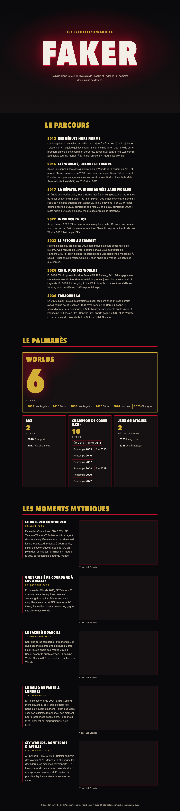
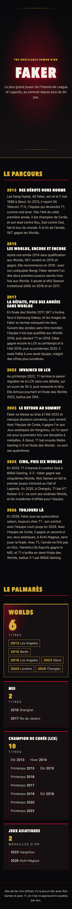
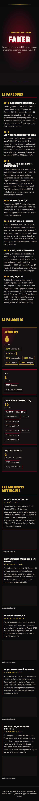

Les Moments mythiques
Le visiteur lisait l'histoire et les trophées de Faker sans pouvoir revoir ses exploits. Il regarde maintenant 5 Moments mythiques en vidéo, sans quitter la page.
Décision attendue
Valider la liste des 5 Moments. Seuls 2 sont des actions de jeu (le duel de 2013, le Galio de 2024) ; les 3 autres sont des finales gagnées. Puis merger.
Risque
Faible
Avant / après
Ordinateur


Téléphone (360 px)


Ce qui change
- La Section « Les Moments mythiques » s'affiche juste après le Palmarès
- 5 Moments, de 2013 à 2025, chacun avec un titre, une date, un court texte et sa vidéo
- Les vidéos viennent de la chaîne officielle LoL Esports, nommée sous chaque vidéo
- Une vidéo ne se charge que quand le visiteur s'en approche : la page reste rapide
- Un Moment incomplet, ou un nombre de Moments différent de 5, bloque la mise en ligne
Fiabilité
Tests87 tests passent, dont 34 nouveaux sur les Moments mythiques
ChecksPassés sur cette version (4a26f9e)
Critères7 sur 7 prouvés (voir l'annexe)
Tests existantsAucun supprimé ni modifié
RelectureDeux tours de relecture indépendante. 4 remarques corrigées, dont une phrase écrite dans le code et le tri par date mal testé
RisqueSection ajoutée à la fin de la page, sans toucher au Parcours ni au Palmarès. Pas de serveur ni de données de visiteurs. Facile à retirer.
Choix effectués
Les 5 vidéos viennent toutes de LoL Esports, la chaîne officielle des compétitions. Chaque vidéo a été vérifiée auprès de YouTube : elle existe, vient de LoL Esports et accepte d'être affichée sur un autre site. L'autre option était des vidéos de fans, plus précises sur certaines actions. Elles ont été écartées, car le ticket exige des chaînes officielles et ces vidéos peuvent disparaître. La contrepartie : la vidéo de 2013 présente la rivalité Faker–Ryu, celle de 2016 analyse la finale, et celles de 2023 à 2025 résument toute la finale. Les captures montrent des cadres vides : les vidéos ne se chargent qu'à l'approche.
Pour l'essayer
Lancez « npm run dev », descendez sous le Palmarès et lancez les 5 vidéos : chacune se lit dans la page. À la largeur d'un téléphone, rien ne déborde.
Annexe
Les critères du ticket
Pour chaque critère d'acceptation, le test ou la capture qui le prouve.
| État | Critère |
|---|---|
| Prouvé | La Section Moments mythiques apparaît après le Palmarès s'il existe, avec son propre titre. Test : la Section suit le Palmarès, ferme la page, avec son titre « Les Moments mythiques » |
| Prouvé | Il y a exactement 5 Moments, chacun avec un titre, une date, un court texte et une vidéo. Le schéma refuse un Moment incomplet. Test : la page montre 5 Moments complets. Tests : un titre, une date, un texte, une vidéo ou une chaîne manquants sont refusés, comme 4 ou 6 Moments |
| Prouvé | Chaque vidéo est un lecteur intégré depuis youtube-nocookie.com, chargé en différé (loading="lazy"), avec un title qui décrit le Moment. Test : chaque vidéo vient de youtube-nocookie.com, se charge en différé et porte un titre qui nomme son Moment |
| Prouvé | Chaque identifiant de vidéo a été vérifié : elle existe, vient d'une chaîne officielle et accepte l'intégration. La chaîne est indiquée dans les données. Vérifié auprès de YouTube le 16 novembre 2026 : 5 vidéos de LoL Esports, intégration acceptée (détail dans la PR). Test : chaîne lue dans les données |
| Prouvé | Les vidéos gardent le bon format (16:9) sans déborder sur téléphone (360 px). Capture téléphone à 360 px : cadres au format écran large, rien ne déborde |
| Prouvé | La liste des 5 Moments est présentée dans la pull request pour validation. La pull request liste les 5 Moments, avec date, vidéo et chaîne |
| Prouvé | Un test sur la page rendue vérifie qu'il y a 5 Moments complets, des vidéos conformes et aucune image copiée. Test : la page complète est fabriquée puis lue : 5 Moments complets, vidéos conformes. Test existant : aucune image dans toute la page |
Les fichiers touchés
12 fichiers : 9 créés, 3 modifiés.
| Statut | Fichier | Lignes |
|---|---|---|
| Créé | src/components/MomentsMythiques.astro Affiche la Section Moments mythiques | +132 −0 |
| Créé | src/content/moments.yaml Les 5 Moments mythiques : titre, date, texte, vidéo et chaîne | +56 −0 |
| Créé | src/data/charger-moments.ts Lit le fichier des Moments et exige exactement 5 Moments | +32 −0 |
| Créé | src/data/moments-schema.ts Les règles qu'un Moment doit respecter, sinon la mise en ligne échoue | +39 −0 |
| Créé | src/data/moments.ts Range les Moments par date et écrit la date en français | +18 −0 |
| Créé | tests/charger-moments.test.ts | +49 −0 |
| Créé | tests/moments-mythiques.test.ts Vérifie les Moments mythiques dans la page finale | +84 −0 |
| Créé | tests/moments-schema.test.ts | +43 −0 |
| Créé | tests/ordonner-moments.test.ts | +38 −0 |
| Modifié | src/content.config.ts | +8 −1 |
| Modifié | src/data/site.ts | +14 −1 |
| Modifié | src/pages/index.astro | +2 −0 |